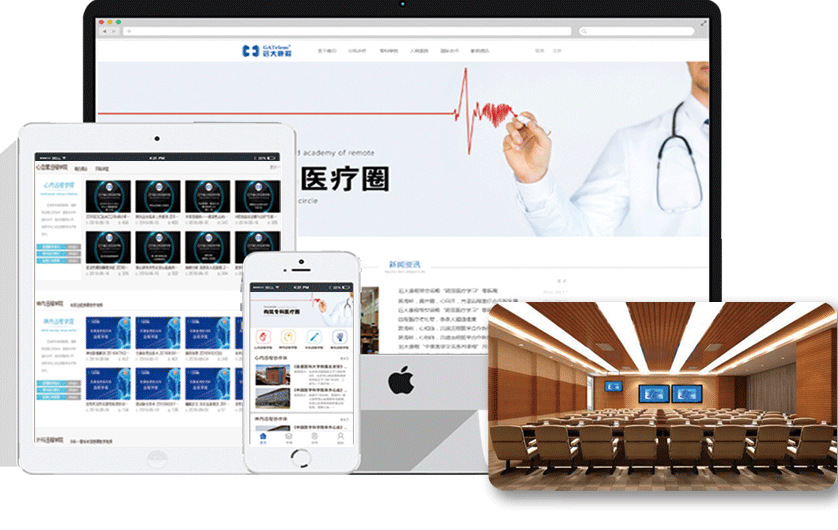

Distance education is one of the major services of the platform. The main purpose is to introduce the most advanced and updated medical information & knowledge to primary level hospitals; to deliver the rich experiences of experts from top hospitals to primary hospitals/clinics in remote area. Through the platform, experts help to answer puzzle questions, solve problems, broaden thinking ways, standardize medical procedures, and obtain the skills of making diagnosis and giving treatment. Remote Cardiovascular Academy in LiaoNing
GATelem launched the "GATelem Remote Acedemy" in different departments in the platform, which makes the academic training, conferencing, communicating much easiler, efficient and convenient.
GATelem launched the "GATelem Remote Acedemy" in different departments in the platform, which makes the academic training, conferencing, communicating much easiler, efficient and convenient.
GATelem has established cooperation with 300+ hospitals in China, with the professional Tele-video equipment in the operation room, we can deliver the whole process live video of the surgery to large amounts of audients in different areas.
GATelem’s academy exchanging focuses on special departments in different levels of hospitals.With”Remote Daily Ward Round”every single day;”Remote workshops”every week and”International academic lectures”every month, GATelem has provide 100+medical lectures, trained 100,000 doctors until now.